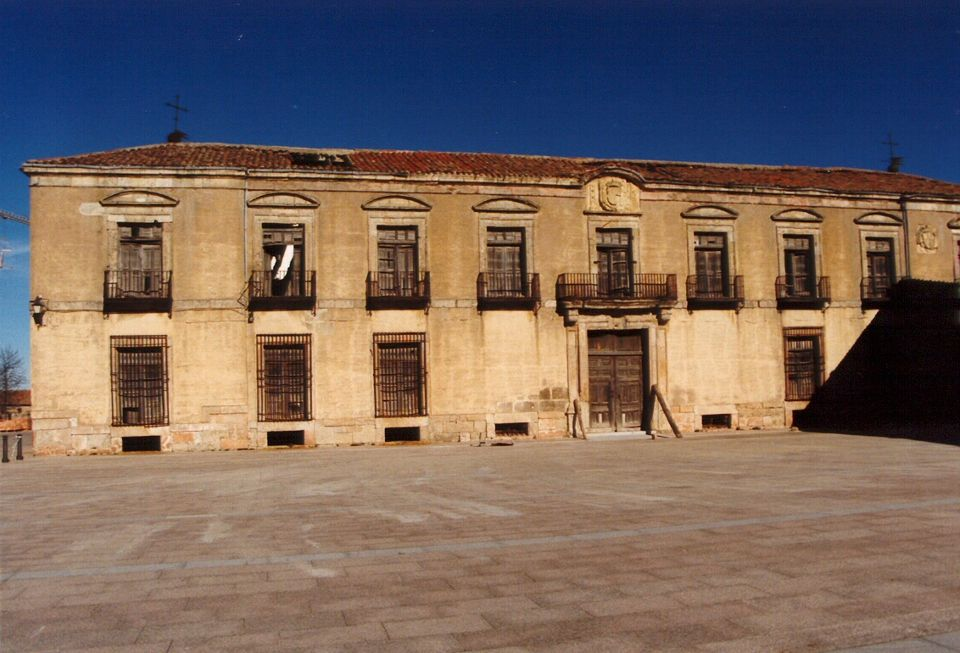

89. ff.176-7.
1.12.1646 (O) Desde Ariza es la última carta que he recibido de VSI oi no la trujo la estafeta de Aragón, y asta que VSI se vaia acercando avrá estas intermisiones. Don Fran[cis]co de la Tenta escribe que VSI le dexo mandado embiasse algún regalo a mi prima, y como obedece de mala voluntad, anticipó el tiempo, y excedió de la comisión, pues hemos tenido mucho con que regalar, y quedar mui regalados todos, sin que baste el estar VSI ausente, y con tantos cuidados para que dexe de estarnos haciendo mrd continuamente. Ya van viniendo relaciones del socorro de Lérida que si es cierto lo que escriben parece impossible que vigilancia humana pudiesse recatar las noticias al enemigo de la poca gente que tenía para tomar armas que la hacen de 200 hombres, y la mucha enfermedad pues passavan de 1V300. El sucesso fue milagrosso, aunque se dispuso y peleo mui bien, y la voz de los mismos franceses, que nos cortan, por la gente que acometió por la parte de Fraga, fue la que infundió tal confussión que ella bastó para conseguir la vitoria. Al sr. Duque del Infantado alaban con grande encarecimientos, y encarecen mucho lo que llega a importar la artillería municiones, víveres tiendas, bagajes y pertrechos que hallaron. Era buena la opinión de que se le huía la gente por hambre, y tenía que comer asta Março y de por si para provier la plaza engañandola y aun se alargan a que avía gran cantidad de mercadurías para introducirlas por Aragón. Retiró su gente sin perdida considerable por unas puentes que cortó, y de la de acá dicen es mucho menos la que murió de la que se avía dicho. Bien piensan algunos que si el tiempo diera lugar tratará el Arcur de desquitarse, aunque se perdiera. Menester será madrugar para el año que viene. Ya se habla de armada y dudan si ha de ir el sr. Conde de Castrillo, y parece q[ue] se calla la ida del sr. Don Juan de Austria y según me dixo una persona no se debe de hallar forma ni persona de entera satisfación en la suficiencia que le assista. Al sr. Duque de Medina han dicho, si le cometerán el apresto de la armada obrará maravillosamente pero dexará muchos quexossos. Por acá todo se está quieto y solo se habla del sucesso de Lérida.
(T) Aora recibo ésta con proprio y la de 28, con el otro pliego inclusso sin firma y después de aver salido de Ariza he escrito a vm de Arcos con carta p[ar]a el sr. Don Luis de Haro, p[ar]a el Pe Confessor, y para el sr. Duq[ue] de M[edi]na, para el sr. Inqui[sid]or General, y para el sr. Don Pedro Pacheco abierta. Este pliego iba con el un Real de porte llegará a 4 o a 5. Estas llanezas son de amistad. Como aun no avía salido de los lug[ar]es de Aragón luego que ubo aviso en Çaragoza le tube con un proprio. El suçeso parece q[ue] fue a 21 y le supimos en Cabrafuente el 26. Pero aora me admiro de lo de aquí me dize vm de la gente del enemigo. Y siempre fue mi toma que avía poca diligencia en las noticias de el enemigo, y que no era possible estubiesse con la gente ni fortificaciones inaccesibles como dezían. Especialmente la gente aviendo tanto tiempo que estaban en sitio y salido tanta y enfermado. Todos concuerdan en lo de el sr. Duq[ue] del Infantado. Mucho sería lo que dexarán porque avían juntado allí su poder, y si les ubieran tomado los cavallos importará si bien ya no serían muchos y estarían muy flacos. En lo que toca a los víveres siempre lo entendí assí porque en esto nunca mostraron flaqueza. Y el cortarles del todo era cosa muy larga al fin Dios lo ha hecho como Padre piadoso, lo que nos toca es saberselo agradecer, que ha sido tan apunto que quiça estaba en esto todo el resto de España. (Siempre he instado con su Magd que estos sucessos entre christianos no se han de celebrar con fiestas profanas, sino solo con gracias a Dios y compassión de la sangre q[ue] se derrama) Tarde es para desquite. Esto es lo que importa y lo que en sus ocasiones he clamado. [Madrugar] (En las cosas de este sujeto avía mucho de dezir, digo de el estado de su valimiento) [Castrillo] Bien entiendo que tiene difficultad esto de el sr. Don Juan de Austria pero no dexarán de acomodarlo de una man[er]a u de otra. Arto más importará retirarse a su casa mas dudo mucho que lo haga y con este suceso y oyr la loa de si conocidos y parientes se ha de engolfar mas en esta ocupación. Lo que toca a la pensión de su muger de Juan de Espinosa tengo dicho al May[ordo]mo que se le acuda, y parece que avía algunos reparos de que no se muestran despachos legitimos de el principal pensionario, lo cierto es que el May[ordo]mo no embaraçará paga sin razón muy justificada, porque no lo ha hecho jamás ni nadie se ha quexado de él antes ha hecho a todos toda comodidad sin un pelo de interés y pocos abrá que ayan procedido con la justificación y pureza que él, porque ha hecho más de lo que debe con todo eso holgaré si vm le escribe, que le hable en la mat[eri]a pues hazer mrd a esa srª de oyrla, y no tiene que congoxarse. Que debiendosele no se dexa de pagar. Y creo el May[ordo]mo llegará presto ay y se puede ajustar a materia y assí se lo podrá vm imbiar a dezir y que esté cierta que no se le hará alguno. Ya avía echado menos algun aviso de el niño, atribuyendolo a la pereza de el pintor. Lo que pide Pereira de la medida de el Christo será menester avisar a Sigüenza. = Yo estaré en Medinaceli dentro de ocho o diez días. No obstante que el tiempo no es riguroso y allí me detendré algunos, por mirar despacio no solo lo espiritual sino también lo que toca al govierno de su Exª. Estos días he andado y ando en sus lugares q[ue] están arto fatigados. Y los vamos alentando lo q[ue] se puede. Pues don Fernando de Ayala ha llebado p[ar]a los privilegios parece de buena razón que va concluyendo el negocio que tanto tiempo ha costado. Lo de los Gajes duplicados de Mynistros no topa solo en la Justificación de su parte. El principal motivo es que en tiempo que tantos sirven de valde y comen tan caro por los tributos y conducen granos con tanta costa q[ue] tiene perdida esta provin[ci]a y otras, y otros muchos gravamenes q[ue] en otro tiempo no fueran justificados y aora por la necessidad pública y defensa forcosa los justifican estos ssres del Consejo, no es mucho que se justifique que sus mrdes sirvan ya que no de valde, por lo menos mas barato con tanta honrra y ssoberanía que puede entrar en parte de paga. A esta razón difficultosamente podrá satisfacer el papel aunq[ue] sea muy docto. Y no son estos puntos que penden mucha jurisprudencia ni dilatación. Están reducidos a una razón muy brebe y muy descubierta por una parte y por otra. Y como se defiende la parte de los Mynistros, se podrá defender la de los otros vasallos en las cargas, y de concluir a que nadie ha de servir a su Magd. Los que dan dictamenes para q[ue] sirvan otros han de servir los primeros y mas qu[an]do el serv[ic]io no los dexa en el hospital. Y muchos tenían ayer la capa en el hombro y oy tienen mas de 10V ds de renta y enparientan con titulos y ssres grandes. Y tanbien causa gran desaliento a los demás que han de servir verse conto lo menos de hacienda (y alg[un]os con ning[un]a) y tanto mas de carga. Éstas son en suma las razones de mi dictamen sin necessidad de mas methaphisica ni Thera. Al sr. Don Luis de Haro buelbo a escribir§ Mis desseos son q[ue] su Magd govierne con toda igualdad y pues Dios le ha dado clara inteligencia y buena intención le dé promta execución. de Almaluez 4 de dize 646. §va abierta léala vm y dé se la en su mano luego supplico a vm y que me perdone.
90. ff.178-9.
10.12.1646T (O) A las ocho recibí esta mañana el pliego de VSI y antes de las doce estavan dadas todas las cartas q[ue] venían en él, menos la del sr. Duque de Medina que no podrá ir asta el martes, y con la estafeta de aier vino la inclussa de su Exª para VSI. El sr. Don Luis de Haro estava dando audiencia, y mucha gente para hablarle, andasse paseando y sin sombrero con que escussa gran parte de cumplimentos,1 sino es q[uan]do va algun señor. Ví que las cartas y memoriales que recibía los pusso todos sobre un escritorio y la carta de VSI la recibió con sumo agrado y la entró en el pecho, y diciéndole io que esta mrd mas debía a VSI xa respondió que q[uan]do no llevará carta de tanto gusto se holgará de verme: procura con gran cuidado que todos salgan gastosssos y cuestale menos que a otro por la apacibilidad natural que tiene. El P. Confessor tomó la carta y la del sr. inq[uisid]or g[enera]l y dixo que las vería y respondería, y luego volvió a dar la del sr. inq[uisid]or g[enera]l para que la llevasse, diciendo no será necessario verla. El sr. inq[uisid]or g[enera]l mostró grande affecto a VSI y preguntó mui despacio por la salud de VSI y a donde estava y se lastimó de las descomodidades que passaría. Leió cossa de la mitad de la carta, y dixo que no avía recibido la que VSI decía en la suia, a que respondí que aquella sola avía venido en mi pliego para su SI y me honrró con decirme a buen seguro que no se dilató el darla. Y que era menester que huviera carta de VSI para verme. Al sr. Don Pedro Pacheco dio la que VSI se sirvió de hacer mrd y viene con favores tan particulares y encarecido que bastará para honrrar todo el linaje espero que se acabe el papel para hablar a estos ss del Consejo y conforme viene la disposición se irá obrando, y estoi tan cierto de la honrra y mrd que VSI Dios le guarde, me hace, que en el negocio no fiará mas de mi mismo. No le hizo buen estomago al Maestrescuela el desengaño, pero VSI hace lo que debe. Mucho es que a la falda de la sierra y tan adelante el tiempo sea el que hace allá tan templado que se pueda caminar puesto el sol. Bien avrán menester los pobres lugares el consuelo y socorro de VSI quiera Dios que con este sucesso de Lérida se conpongan las cossas de Cataluña, y disponga la paz, que tanto se desea. El lunes huvo consejo de estado allá arriba, no saben si es sobre cassamiento de su Magd o disposición para la campaña que viene, menester será madrugar y acá discurren si Arcur quedará con las armas para tomar satisfación, o se darán a otro, por aver él faltado al orden del parlamento. Son infinitas las relaciones que andan pero con tal variedad que marean. Una dicen que vino aier por menor de los muertos y heridos y de todo lo que se halló en las fortificaciones que parece increible, segun el trigo, cevada, carnes, regalos medicinas y provisión de por sí, para procieces2 a Lérida engañandola. Las 26 piezas de artilleria grandes y en ellas doce apostoles de Perpiñan con toda la valeria polvo cuerda pistolas mosquetes y sillas de cavallos encarecen mucho, y particularmente dos puentes que hallaron. Ello fue gran misericordia de Dios, y de las dichas maiores que nos pudieran suceder. De la ida a la Andalucía del sr. Conde de Castrillo se ha vuelto a hablar y dicen procura escusarse por falta de salud. 3 El sr. Don Juan de Santelizes se viene a servir su plaza que le escussará al sr. Duque de Medina grandes ocasiones de enquentros. El Confessor del sr. D. Juan de Austria está aquí, y he sabido que se hallan embarazados o por parecer que tiene demasiado espiritú, o que por la persona que le ha de asistir, con que no está mui adelante la ida por este año, si no mudan de parecer. Aora vuelven a hablar de la moneda y dicen han pregonado q[ue] los Reales de a ocho no se pueden ..... (Incomplete)
(T) Esta recibo media legua de Medina a donde entraremos mañana con el favor de Dios y se hará asiento por algunos días el tiempo se ha encrudecido algo y causado algun destemple de pecho y también ha ayudado el aver caminado las mañanas a dezir Missa y exercer Pontificales de un lugar a otro. El natural es agradable y aunq[ue] los que tienen otro humor muerden en la blandura pero dado que aya de aver mynistro de ese genero de recursos y audiencias,4 no tengo por malo el agrado. Yo no solo en esto le debo muy especial benevolencia sino también en los dictamenes. De el sr. Duque de Medina habla con summo respeto y estimación y me consta q[ue] le dessea hazer buen officio en todo. Y luego que no le estará mal a su E entenderse con él y assí se lo he significado. 5 Otra carta para el sr. Don Luis remití abierta en el pliego pasado. Ésta fue en un pliego de el Pe Confessor poco importa q[ue] se perdiesse llegando es otra siempre debo mucho favor al sr. Inqu[isi]dor Gen[er]al. En estos y otros servicios sr. solo se puede hazer caso de la voluntad. Nunca se ha visto aquí semejante tiempo, estos días ha llovido y era necess[ari]o y de ayer acá ha resfriado. Aora acaba de llegar aquí un Capitán que se halló en esta batalla y fue paje en n[uest]ra familia en Segovia que no sé si le alcançó vm qu[an]do nos hizo mrd allí que era de Vall[adoli]d hijo de un letrado n[uest]ro y él se llama Don Felipe. Haze buena relación y reforma mucho las q[ue] corren. Lo q[ue] se halló considerable dize son armas de Mosquetería en mucha cantidad y 24 piezas grandes pero que no eran los 12 apóstoles solas dos era de ellos y que clavaron la una. Otras cosas dize q[ue] por ser tarde y menudas no refiero en materia de bastimentos cosa considerable dize q[ue] solo se aprovechó dos o tres mill cargas de harina finalmente el suceso ha sido grande absolutam[en]te y mucho mayor en la ocasión y aprieto de las cosas. Don Fer[nan]do de Ayala me dize q[ue] le imbie poder p[ar]a dar carta de pago de las medias anatas para sacar los privilegios y p[ar]a cobrar lo de los naipes. Y resondo le que será necess[ari]o ver el poder minutado de allá con las cantidades y tiempos de estos reditos y lo demás q[ue] pareciere necess[ari]o para la forma y fuerça de el poder supp[li]co a vm se lo dé a entender. Eso ya me avían dicho que se avía resfriado.[Castrillo] Este tropiezo se avía tratado de quitar al sr. Duque y me huelgo que se aya conseguido.[Santelices] Lo de el sr. Don Juan de Austria parece que va despacio. Blacona 10 de dize.
91. ff.180-1.
8.12.1646 (O) El miercoles escribí a VSI como se dieron luego las cartas que vinieron para el sr. Don Luis de Haro. Pe Confessor. sr. inq[uisid]or g[enera]l y sr. Don Pedro Pacheco, y la del sr. Duque de Medina irá el martes, y remití a VSI una de su Exª. Oi no la huvo con la estafeta de Aragón y parece señal cierta el averse detenido VSI en la visita. Por acá no ai particular de que dar quenta, porque de Italia no se sabe con certeza el estado que aquella tiene. De Cataluña vienen relaciones pero tan differentes todas que unas se quitan el credito a las otras, y dan por razón que como fue de noche cada uno escribe lo que vio o lo juzgó que sería. No se ha impresso asta ora ninguna relación una dicen que ai del P. Gracian de la compañia que tiene tres pliegos, y ésta decían que tratavan de imprimir los que io he visto todas difieren en el numero de los muertos de una y de otra parte, en el de los piezas de artillería que se tomaron y en el tiempo que pelearon y en el modo con que s retiró el enemigo la que va aquí vino en pliego de mi sª la Duquessa del Infantado y la debió de trasladar algun muchacho por las mentiras que lleva. Dicen que el exército de su Magd está mui deshecho porque el día de la ocasión no le hacían de cinco mill infantes y dos mill cavallos, y aora con el pillaje se ha disminuido mucho, de que se lastiman con razón porque aora era el tiempo de apretar antes que se pudiera rehacer pero segun escriben tratavan ia de alojar la gente y de venirse los cabos principales. Aier y oi ha hecho aquí días apacibles, en Medina pocos pienso lo llegan a ser, y en estar cerca las pasquas si VSI se ha de recoger a tenerlas en Sigüenza. No sé si conocía VSI a D. Bemingo Camerino un clerigo gordo de grandes correspondencias en Roma y en todas partes. Acabando de despachar la estafeta de Andalucía estuvo con sus criados y luego se acostó y se quedó muerto Dios nos tenga de su mano.
(T) Ayer reciví una legua de Medina la de el miércoles y respondí con proprio por Sigüenza estando para partirme y llegué a Medina al anochecer donde recibo oy ésta y respondo por la estafetilla q[ue] pasa por aquí de Aragón, que tengo poca fé con ella porque las que se pierden de ordinario son las q[ue] se despachan por ella como lo que dize vm no llegó el sábado y me pesaría no pareciesse porq[ue] iba p[ar]a el sr. Don Luis de Haro abierta y será necess[ari]o duplicarla. En la de ayer que llegará junta con ésta. Dixe a vm lo que refiere del socorro de Cataluña de vista don Felipe Muñoz q[ue] fue paje en casa y ha salido buen soldado y de buen aliento q[ue] en estos tiempos no es menos necess[ari]a professión. Añadese q[ue] mas de la moza se ha venido fugitivo y queda en Huesca y le aguardaban en Zarag[oz]a. Éstas dize fueron 24 y entre ellas tres de Perpiñan y la una clavada. Y mucha mosquetería de bastimentos todo dize q[ue] se saqueó sin provecho, excepto la harina que era gran cantidad y de mucha importancia para la plaza. Esto es lo ordin[ari]o y en haciendo una facción se portan como si no ubiesse mas q[ue] hazer y se ha de formar cada año nuevo exérctio al verano, aguardando a que el enemigo se fortifique y andar siempre en defensa de milagro. Estos días hizo también por acá razonable pero después se ha mudado y haze riguroso especialm[en]te de la noche y oy. Entiendo q[ue] ha de ser necess[ari]o hazer la pascua de navidad por no dexar comencada ésta y porq[ue] tengo convocados aquí todos los curas y vicarios (que serán mas de 80) de esta vicaria p[ar]a días antes de navidad. Mui apresurada fue esta muerte, Dios le tenga en el cielo. El mem[ori]al q[ue] vm me imbió los días pasados sobre un pleyto de un sacerdote remití al Provissor y responde, que las partes le han sacado el negocio por jueces superiores y así que no tiene mano en él. En el pliego de ayer iba carta p[ar]a el sr. Duque de Med[in]a y para don Fer[nan]do de Ayala, si este responndiere luego podrá volber el poder q[ue] pide antes de navidad p[ar]a que se concluyan los despachos antes de vacaciones. Medina 12 de dize de 1646.
92. ff.182-5.
12.12.1646 (O) La carta de 4 desde Almaluez recibí oi, y la que venía para el sr. Don Luis cerré y llevé luego. Abrióla su Exª y dixome que escribiesse a VSI como oi no podía responder, y que fuese mañana y tendría respondido a ésta y a las demás de VSI para que fuesse el sábado, porque preguntó quando era el día de estafeta y si VSI estava ia en Sigüenza. Recibióla con mucho agrado y fue la leiendo porque iva solo en el coche. Ya avisé a VSI como dí todas las cartas que vinieron en el pliego q[uan]do VSI cita y lo que respondió cada uno de los ss. para quien eran. La carta que hechó menos el sr. inq[uisid]or g[enera]l será bien hacer diligencia para que no se quede perdida. El sábado a las diez dadas de la noche vino un criado del Pe Confessor con una carta para VSI manda que la remitiesse luego. Dí al criado que si avía de ser para la estafeta, o con toda diligencia despachando luego correo. Respondió que le parecía que con la estafeta por ser noche como era tan tarde para la de Aragón porque cierran los pliegos mas temprano le dixe que la llevasse antes q[ue] se fuessen los officiales y la encargase mucho, pues el sobrescrito llevava bastante recomendación que decía Por el Rei Xa a la mañana fui a saber que cobró de ella y me dixo el criado del Pe Confessor que halló ia juntando los pliegos para hacer la baje y en la estafeta le dixeron se daría con todo cuidado, y que dixo al Pe Confessor lo que io le avía respondido y lo que avía pasado, y le respondió que estava bien. Supe que a aquella hora la embiaron de palacio con un soldado al Pe Confessor con dos luegos, que les quebrava las puertas. Holgaríame que huviese llegado porque sin duda sería negocio de importancia, y si VSI no la ha recibido será bien hacer dilig[enci]a con la estafeta de Aragón si io me detenía a escribir a VSI y a hechar cubierta fuera posible quedarse aquella noche y luego culparme si se tardava o se perdía. Del sr. Duque de Medina recibí carta el lunes y dice creió escribir a VSI pero por quedar con un catarro grandíss[im]o no puede, y piensa que VSI está en Madrid. Aier fui a decir al sr. D. Pedro Pacheco como su Exª le dexava de escribir por esta causa, y acabava de saber que aquella señora escribía una carta a su Exª intimando la guerra con pretexto de que el negocio estava ia publico y le sabía el sr. Marqués de Villafranca, y se avían hecho juntas sobre él. Al sr. D. Pedro le dio grande pessadumbre, y me mandó que fuesse luego a avisar al sr. Marqués que discurrió largo sobre los motivos de la mudanza y llegó a pensar si con la venida de su Magd y conferencias con estos señores ha hallado disposición para determinarse, o si es tentativa, o amenaza porque si fuera resolución no parece escribiera a la parte que la quería tomar sino la tomara, si aora si llegasse a rompimiento no avía de parecer bien el medio que se tomó para la conclusión, assegurando ella que en traiendo el instrumento o título,6 entregaría todos los recaudos que paravan en su poder. De la ida del sr. Don Juan de Austria se dice que el lunes va su Magd a Aranjuez y ha de venir allí a tomar las instrucciones y bessar l. m. que si fuese cierto no será mejor nueva para su Exª. Tienese por cierto que el sr. Conde de Castrillo no va al apresto de la armada, y aora solo se duda si corren tío y sobrino con la confidencia que antes, pero ia todos saben que solo el sr. D. Luis es el poderosso, y dicen que lo está en la gracia de su Magd mas q[ue] nunca y mucho mas que el sr. Conde Duque, y bien lo dicen los pretendientes con el acudir a las audiencias.7 Acerca de los puntos que contiene la carta que VSI escribió a su Exª hablaré otro día que aora es tarde. El lunes se publicó la Maiordomía Maior de la Reina en el sr. Duque de Nájera. Después acá han dicho que irá por la que lo huviere de ser, no falta su comento en la provisión si es porque no esté en la cámara. Al sr. Don Claudio Pimentel se ha muerto de parto mi sª la Marquessa de Tarecena su muger que ha causado grande lastima por si VSI quiere escribir el para bien o pessame, me pareció avisarlo. Al ajente de la muger de Juan de Espinossa dixe lo que VSI escribió y esperará [a que] venga el Maiordomo. Toda la prissa que puedo doi para que el niño está allá para pasquas, no sé si Luis Fe[rnande]z ha de acabar que es terrible su flema ya avisa Don Fer[nan]do de Aiala a VSI el estado en que tenga los privilejios y embió a pedir poder, porque me preguntó si le tenía. Essa carta embió el sr. D. Pedro, y como la embió vino cerrada, porque después me dixo era la respuesta de la de VSI es de parecer que días mas o menos se acabe el papel, y se procure entrar con seguridad. Mi prima tiene tanta fée con los polvos de n[uest]ro P. santo D[omingo] y se la acrecienta el venir por mano de VSI que me dice supplique a VSI se sirva de hacerle mrd de mandarle embiar algunos o decir donde se hallarán porque en el Rosario no los ai. Oi me dixeron allá que dentro de tres o quatro días estaría aquí el Pe Jeneral. Tanbién esperan que vendrán presto los ss Marques de Leganés y Duque del Infantado y dicen se aquartelava el exército. No ha salido asta ora relación impressa de sucesso.
(T) He me holgado que pareciesse este pliego. B.l.m. a vm por el cuidado que siempre tiene de hacerme mrd. Luego que llegué a Medina escriví con la estafetilla que pasa por aquí, y el t[ie]mpo que estubiere aquí podrán venir las cartas derechas, que será de aquí a los Reyes poco mas o menos. Ante ayer me trajo este pliego don Fran[cis]co de la Tenta y se volvió oy. Aquí fuera de la visita ay una ocup[aci]ón bien trabajosa que acuden todos los lugares a pedir trigo y es forcoso oyr los y pasar por mi mano porque la necess[ida]d es mucha y gen[er]al y los granos no muchos aunq[ue] no se ha dado uno ni se dará p[ar]a fuera del ob[is]pado salvo los q[ue] ha llebado su Magd. A los lugares de el Ducado se ha dado quanto tenía parte en limosnas y parte a la tassa en bellón y como no lo hallan sino a 25 y temen se ha de ir subiendo es una bateria increible. Y temo q[ue] ha de ser grande la hambre en los meses últ[im]os. El año ha sido cortíss[im]o y su Magd ha sacado de solo este ob[is]pado 40V f[anega]s y todas las conduce a Aragón esta pobre gente, cuestales cada fanega fuera de lo q[ue] les dan por porte, 8 doze Rs y ahora les alojan mill desmontados. Mucho sirven a su Magd. Ya reciví esta carta de su Magd. Procuraré q[ue] en este pliego vaya carta para su Exª. Estas razones son achaques para seguir su intento y para tener alg[un]a prenda mas si le responden, y si no una quexa mas. La materia es bien enfadosa. Poco se concluyen los discursos con este gen[er]o de personas. Lo que me parece es que siempre ha inclinado a seguir su neg[oci]o. Y el aver visto algo de temor abrá engendrado mucho de osadia, si bien parece ha sido muy conforme a prudencia la suavidad con q[ue] se ha tratado el neg[oci]o. Y no hallo que se aya faltado a cosa de lo que se requeria, mas en semejantes negocios no se puede echar fundam[en]to ni regla firme. Si el sr. Duque de Medina se retirara a su casa le importará arto para su hacienda y quietud. Siempre lo he entendido assí y en todo esto q[ue] se sigue avía mucho que dezir. [Castrillo] Don Fran[cis]co de Perea me ha dicho que trae corrimiento a los ojos quedo con cuidado asta ver letra de vm. Mucho se abrá sentido esta provission p[ar]a lo que se tocó arriba. [Nájera] Mozo queda el sr. don Claudio y como no estubo muy gustoso en este estado quizá se volverá a la Igl[esi]a. Desseo q[ue] se allare esta paga. Los de Duruelo quiçá llebarán alg[un]a partida de din[er]o y por escusar el contar se podría pagar la paga caida de el Cardenal Tribulcio a Pº Mª y al a[h]ijado de Aguirre, mas consultaré a don Fran[cis]co de la Tenta de el estado de las pagas y avisaré a vm. Por acá no se ha publicado nada de la plata, mucha duda ay que se reforme en esto cosa fixa. Supp[li]co a vm me diga como anda esto por allá. Desseo que vm se contente de el niño antes que venga, por si tubiere algo que enmendar. A Don Fer[nan]do escriví sobre esto en el pliego pasado que imbiasse el poder minutado con las cantidades puntuales de los privilegios de que se ha de dar carta de pago y las q[ue] se ha de cobrar de los naipes. Y si el May[ordo]mo llega ay tiene poder y podrá otorgar las cartas de pago y si no de acá se imbiará en aviendo resp[ues]ta. El sr. Don P[edr]o muestra en su carta lo que estima a vm y qu[an]to dessea ayudar a todo y señaladamente al neg[oci]o presente. Y pareceme bien asegurar la sustancia y la brebedad antes que se comience. En llegando a Sig[üenz]a imbiaré los polvos de n[uest]ro pe Sto D[omin]go, que no puede nadie hallarnos si solo yo. Supp[lic]o a vm me avise qu[an]do llegué el Pe Gen[er]al p[ar]a escribir. Medina 17 de dize de 1646.
93. ff.186-7.
21.12.1646T (O) Con la estafeta de Aragón recibí oi la carta que VSI se sirvió de escribir a 12 desde Medina, y ia llegó la que venía para el sr. Don Luis de Haro, como avisé el miércoles que fue el día que la recibí y la que avía de venir aquel día con carta para el sr. Duque de Medina y D. Fer[nan]do de Aiala no ha llegado, de suerte que la del sábado vino el miércoles, y falta la de aquél día. Con ésta va la respuesta de la del sr. Don Luis q[ue] fui aier por ella y ia la tenía el secret[ari]o. Aier dixeron avía bajado otro decreto apretando mas lo resuelto de los gajes, no he podido saberlo de cierto, pero si lo fuesse el sr. Don Luis lo escribirá a VSI. Quedo mui contento de que VSI esté ia en Medina, que aunque dicen es lugar mui frío, tengo por mucho maior descomodidad el andar caminando y mudando temples y aguas. Antes de recibir oi la carta de VSI me dixo mui affirmativamente el Maestrescuela que VSI estaría sin duda en Sigüenza estas pasquas, es boníss[im]a persona y me parece cree facilmente. Asta ora no se ha sabido que aquella señora aia hecho mas dilig[enci]a que la de escribir la carta, y en el interím que no esté acabado el negocio, siempre puede dar cuidado. Aqui estuvo aier Pedro Mantuano y dexó la mem[ori]a que va con ésta, es de la condición que VSI conoce, queda con grande confianza de que VSI le mandará guardar Justicia, y que por esta atención no ha traido acá el negocio, y dixo de sí mismo, porque io en llegando a quexar, me quexo fuertemente, y la materia de maravedís para él es mui sensible. Todo lo que se pudiere hacer con justicia, conviene guardarsela mas que a otro. Si no parece la carta de Don Fer[nan]do de Aiala no se podrá ajustar el despacho antes de pasqua que deseo se acabe negocio tan prolijo. No sé si llegará mas presto el pliego poniendo en Medina pero porque no se aventure la carta del sr. D. Luis va a Sigüenza. Aora se acaba de imprimir essa relación del socorro de Lérida y acerte a passar por en cassa de Pedro Cuello y me la dio y porque VSI es ia mas soldado que los consejeros de guerra embio tanbién una manuscripta que me dieron y dicen es del Padre Gracián de la compañia y anda ia mui esparcida. No me acuerdo aver visto a Don Phelipe Muñoz, y basta vale para dar buena quenta con qualquiera profesión el aver estado en cassa de VSI. Por acá tienen por cierta la ida de Mos de la Mota y alaban mucho la retirada que hizo Arcur salvando su exército por una puente, y formando los esquadrones luego que le passó. Del cassamiento de su Magd se habla mucho y algunos tienen por cierto que será con la hija del emperador, aunque les parece mui pequeña, y Mantuano decía que las Alemanas pocas veces paren antes de las diez y ocho años. Tanbién se ha dicho que traían el hijo del emperador para que se criase acá y cassarle con la sª Infanta. Dudan si será el sr. Almirante o el sr. Duque de Nájera quien irá. Otros dicen que lo que conviene era cassar la sª Infanta con el Rei de Francia haciendo paces y capitulaciones para que en casso que sucediesse en estos reinos.9 Bien tiene ... (Incomplete)
(T) Si no llegare el pliego en q[ue] iba la de el sr. Duque de Medina se abrá de repetir y también escriví a su E ayer en la estafeta de aquí en el pliego de vm. La de Don Fer[nan]do de Ayala si no llegare solo contiene que imbie la minuta de el poder en quanto a la quantia de que le ha de dar carta de pago de los privilegios y la que se ha de cobrar del juro de los naipes que viniendo de ay la forma no se erraza. Supp[li]co a vm se lo imbie a dezir p[ar]a que se dé fin a cosa tan larga q[ue] se admira a don Fran[cis]co de Perea q[ue] aya durado tanto. El sr. Don Luis responde bien a todo. Este decreto es assí. Aquí haze grandes nieblas pero no nos va mal de salud, no se podrá acabar esta visita hasta pasadas las fiestas y luego nos retiraremos a casa. El Provissor ha estado oy aquí. Y se irá mañana por la mañana a dar punto a la aud[ienci]a y yo haré órdenes para dos o tres curas. Harto será si no da qu[en]ta al Rey, porq[ue] tenerle en casa y conocer su benignidad es grande ocasión. Y mas estar persuadida que el neg[oci]o está público y que no se puede empeorar. [Señora] Mui en gracia me ha caido la amenaza de quexarse fuertemente como si esto ubiesse de mover. = Conforme a derecho la prim[er]a instancia toca al provissor y assí se le ha remitido del Consejo otra causa de la misma especie. Mas desseanse tan poco en esta audiencia que se tendría grandíssimo gusto q[ue] la advocasse a si el sr. nuncio o el Consejo y si la parte lo quisiere tratar no se hará resistencia de la nuestra. Y si se ha Retenido es por hazer justi[ci]a a quien pide la retención conforme a derecho. Pero viniendo al artículo que se pretende aunq[ue] no es de mi facultad me parece que tiene justicia P[edr]o Mantuano y que se deben mandar executar las Bullas, y los contratos en orden a la paga, pues está posseyendo. = Que poner excepción si cabe o no la pensión es artículo y pleyto differente q[ue] requiere altiorem indaginem. Pero como al provissor lo ha de sentenciar lo que yo puedo asegurar de sus letras y justificación es que guardará justicia, y en caso de gracia será yo buen intercessor assi por el dictamen que llebo insinuado como por el respecto y amistad que tengo a P[edr]o Mantuano. Ya he dicho a vm que la carta de d. Fer[nan]do no contiene mas de que remita la forma del poder, pues los oficiales saben como ha de ser para q[ue] vaya a su satisfación y yo no sé las cantidades. Creo llegarán mas presto. Pero muy bien fue asegurar el pasado por Sig[üenz]a. He leido la de mano del Pe de la Comp[añi]a por parecerme que sería mas puntual y remito a vm esa que ha imbiado de Çarag[oz]a con otras, y todas deben de diferenciar poco, si bien yo no he leido esa, porq[ue] con lo q[ue] he oido a los que vienen de la campaña he hecho concepto del succeso. Don Philipe Muñíz no sé si estaba en casa qu[an]do vm fue a Seg[ovi]a, es hijo de un hidalgo abogado de Vall[adoli]d de crédito q[ue] hace allí nuestros negocios. La perdida de gente no fue mucha y se ha quedado con su exército entero no obstante que se le deshilo mucha antes de la rota. Qu[an]do se dio iba n[uest]ro exército casi deshecho, y aora lo queda del todo, que éste es n[uest]ro trabajo que cada año es menester començar a formar exército con grande gasto de gente y hacienda. Es forcoso que se trate con mucho calor y yo crey estubiera ya concluido esto por la grande importancia del neg[oci]o y brebedad para la sucesión. Mucha probabilidad tiene lo de el sr. Alm[iran]te por aver dexado su casa en el camino, si no es q[ue] los empeños y el averle de socorrer obste. Mucha duda me hace esta conveniencia. Dios dé luz y encamine a lo q[ue] sea mas servi[ci]o suyo. Que la cosa está bien necessitada de muy especial providen[ci]a suya. Medina 21 de dize 646.
94. ff.188-9.
19.12.1646 (O) El pliego que andava perdido con las cartas para el sr. Duque de M[edi]na y Don Fer[nan]do de Aiala vino con la estafeta de oi: pero el que esperava con la respuesta de si avía llegado la carta de su Magd que remitió el P. Confessor, no ha llegado, podrá ser que como los miércoles no ai estafeta en Medina se dilate asta el sábado con la de Aragón. Mui frío lugar es, para averse encrudecido el pecho, que con este rigor de tiempo y con el que VSI se trata, es mucho que no cause maiores effectos. El caminar en aiunas y estarse asta acabar los officios que forcosamente ha de ser mui tarde, puede ocasionar alguna repitición en la hijada, como VSI refiere que la tuvo ai tan penossa. Por amor de Dios que VSI se baia a la mano en estas descomodidades, y considere q[ue] no es solo de VSI ni de las ovejas de Sigüenza, sino de toda la monarquía, que ha menester la salud y vida de VSI. Con la estafeta del lunes vino la carta inclussa del sr. Duque de Medina para VSI y asta el martes no podrá ir la que recibí oi. Aier estuve con el sr. Don Pedro Pacheco y me dixo que se avía suspendido aquel rompimiento y el negocio tenía mejor estado, y assí se avisó anoche a San Lúcar, que la nueva passada avría dado mal rato. Todas estas son llamaradas de furor y de inconstancia al passo de sus comodidades. Siempre el sr. Don Luis de Haro ha mostrado gusto de estrecharse con el sr. Duque de Medina, y oi le estará mejor que nunca el tomar el consejo de VSI y mas con la resolución que puede aver si va el sr. Don Juan de Austria a la Andalucía. Estos días oí hablar en cassamiento del sr. Marqués de Liche con mi sª Doña Ana,10 y éste era buen nudo para estrecharse, y luego que murió el sr. Conde de Saldaña escribí lo que se decía en los estrados acerca desto mismo y respondió su Exª que VSI y el sr. Duque del Infantado avían de cassar a Antonia. Anoche llegó a las siete y con conocimiento el acompañamiento dicen que fueron mucho los vitores y que si entrar de día fuera grande la demonstración, viene mui bueno su Exª [Infantado] que oi le he bessado l.m. y mañana quiere ir a Aranjuez. Bien merece que su Magd le honrre y haga mrd. A don Fer[nan]do de Aiala dí la carta de VSI oi y dice remitirá la minuta del poder. De Don Fran[cis]co de la Tenta recibí carta con una libranza de Don Ant[oni]o de la Torre de 10 V 102 Rs de Vellón para darsela a Pedro de Irueges y tomar recibo por q[uen]ta de la pensión de Don Diego Zapata de las pagas asta s. Juan deste año, io le hablaré. Tanbién recibí un pliego del licen[cia]do Rodrigo Frescel con dos cartas para el Maiordomo que dice llegará presto aquí. Con gran cuidado se examinan los recaudos de los sacerdotes que están en Madrid, y a todos los que no tienen beneficio capellaría o obligación forcossa les mandan ir a sus diócesis, y si son de éste a sus lugares, ya ha proveido el sr. Car[dena]l dos canonjias y una dignidad la últ[im]a fue de Don Fran[cis]co Palarnesin pero ia no acudía al Consejo de Inq[uisici]ón. Todos estos días dexa de acudir el sr. Don Pedro al Real y va al supremo de la Inquisición tarde y mañana, sospechan que ai algún negocio grave, y aun dicen si es el de Prothonotario, 11 y si ai decreto para que no se alce la mano del asta concluirle como está aquí su herm[an]o la Justicia. Oi he sabido de un sobrino capitán de infantería que le tenía por muerto como no escribía y ha estado su compañía en Lérida, creo vendrá aquí presto, y dará buena razón de lo de dentro de la plaza como Don Felipe de lo de fuera, otro capitán escribe que fue mas que milagro, y que obró mas la disposición divina que la humana. Dios sea glorificado.
(T) Siempre temo esta estafetilla de Aragón. De don Fer[nan]do he recibido oy res[pues]ta y dize q[ue] por la dilación de el poder no se podrá concluir hasta pasadas las fiestas y si yo fuera el Agente no ubiera ocasionado esta dilación q[ue] bien se debía offrecer la difficultad, pero qu[an]do se ha aguardado tanto poco viene a importar si no ay otro tope lo que alargue mas. El pliego que no ha llegado escriví avisando de el recibo de la carta de su Magd que encaminó luego el correo desde torre nocha. =De aquí salen las cartas el viernes por la mañana para llegar ay viernes o sábado. El catarro ha faltado gracias a Dios aunque no podemos negar el destemple de la tierra q[ue] sin duda es mayor q[ue] el de Sig[üenz]a. Porq[ue] va proprio de don Fran[cis]co Perea he tomado licencia de poner todas las cartas en este pliego. Supp[li]co a vm m[an]de imbiar a la estafeta porq[ue] son para fuera. Y las que son para M[adri]d imbiará vm las que fuere servido q[ue] ninguna necessita de mas cuidado. a mí se me acrecienta estos días como se juntan alg[un]as de Pascuas y no ay secret[ari]o. El sr. don Claudio me escrivió la muerte de su muger. En la pasada que dize vm no ha llegado la carta p[ar]a su E. Y la q[ue] aora merece vm me es de mucho gusto porque parece que se va reduciendo a retirarse, que importaría mucho a su hacienda y quietud, y mas si hiziesse quento q[ue] para sí no tiene mas q[ue] a M[edi]na y p[ar]a su hijo el Marquesado de Alcalá como le he escrito estos días. De las mudanças deste neg[oci]o ay que hazer poco caso mayorm[en]te en pro, como de todo lo que no tiene principio constante. [Doña Ana] No sé quién es esta señora. Por aver estado totalm[en]te cerrada la correspondencia del exército no pude escribir el pesame al sr. Duq[ue] del Inf[anta]do qu[an]do tubo noticia de la muerte de el Conde su hijo. Y después crey poderle ver al paso de M[adri]d y decuidose quien avía de avisar aora a su E el pésame y el p[ar]a bien de la Vi[tori]a. Ya me respondió lo q[ue] he dicho arriba. [Fernando de Ayala] Yo me olbidé de suplicar a vm esta dilig[enci]a mas la mrd y favor q[ue] vm me haze lo supe todo. Y también he dicho a don Fran[cis]co que prevenga a vm con aviso de alg[un]a paga para los de Duruelo si traxeren ay din[er]o por escusar el contar. Esto es muy bien hecho y uno de los puntos q[ue] ha muchos días he propuesto a su Magd. [Curas] En Çarag[oz]a entendí de su her[ma]no que avía de venir a M[adri]d a tratar este negocio. [Villanueva] Mui poca gente dizen avía dentro, pero buen orden para alargar el socorro como lo dizen alg[un]os soldados q[ue] han pasado por aquí de dentro q[ue] todos se vienen a registrar conmigo como saben q[ue] me compadezco de su trabajo. Pero si no sucediera lo q[ue] llaman milagro, creo no se pudieran defender de Arcurt. Pero también creo (si es verdad lo que dizen de su altivez) que no fue milagro sino castigo ordin[ari]o que Dios da a los tales. Quiçá excederán los q[ue] le censuran, q[ue] en estas relaciones no son buenos testigos las p[ar]tes. Medina 23 de dize.
95. ff.190-1.
22.12.1646 (O) Después de anochecido recibo el pliego de VSI con las dos cartas para el sr. Duque de Medina y sr. arçobispo de Damasco 12 que remitiré y daré y tanbién la otra que vino el miércoles para su Exª. VSI no dice como está el pecho del aprieto que padecía, que como sé lo que sufre, estaré con cuidado asta saber que VSI quede de todo punto bueno. El corrimiento a los ojos me trata mal estos días debe de ser como son tan humedos. Quando baia mañana a llevar la carta al P. Confessor antiguo sobre q[uan]do llegó o esperan al Pe Jeneral. Ya dí la carta a D. Fer[nan]do de Aiala y quedó de embiar la minuta del poder, asta ora no ha venido el Maiordomo, y si viniere otorgará las cartas de pago pero ia asta passadas las vacaciones no se podrá ajustar el despacho. Esta noche ha estado aquí el ajente del sr. Don Diego Zapata y le pareció plaço mui largo el de sesenta días y peor venir la letra en el sr. Don Fran[cis]co Antonio de Alarcón, y se resuelve a escribir a VSI sobre ella, y sobre no se le ha pagado después que entró en el obispado. Haré que el P. Prior del Rosario vea el niño Jesus antes que se lleve por si tuviere algo que enmendar. Bien será tener dispuesta la entrega si los de Duruelo huvieran de venir. Ya se acaba de hacer el papel y el sr. D. Pedro quiere retrar13 primero que se imprime algunos puntos bien apretados parecen, quiera Dios que aprobeche. Y el sr. Don Pedro está mui fino en hacerme mrd. Oi dixeron que el sr. Don Claudio Pimentel quería volver al Consejo de Órdenes, que no me pessaría.14 Esta noche decían oi que vendría su Magd de Aranjuez i luego se dirá lo que ai del sr. Don Juan de Austria. Al sr. Duque del Infantado le hizo su Magd mrd de llave de la camara con exercicio, y dicen que sirvió luego en Aranjuez mucho se le debe, porque hizo mucho. Grande trabajo ha de passar VSI con la esterilidad del año y aprieto de los lugares con la conclusión de lo que han llevado y asor con los alojamientos. Bien será menester toda la limosna que VSI les hace. Mui en secreto se dice si el sr. Duque de Arcos es muerto que si fuesse verdad sería gran perdida, y mas en el estado de las cossas de Italia.
(T) Por asegurar las cartas y salvar las de estas faltas q[ue] suele aver en la estafetilla puse esta mañana en pliego de vm un gran mazo de ellas, por averse [de] ir Cuencas a M[adri]d. En la de el sábado que llegaría día de Pascua dixe a vm como avía mejorado. Ya estoy del todo bueno de aquel aprieto con el reconocim[ien]to que debo al favor q[ue] vm me hace, y siento mucho el corrim[ien]to a los ojos y sería bien q[ue] vm se escusasse de escribir por su mano. Y no le hará daño a Luisico p[ar]a la pluma y p[ar]a la nota, q[ue] con su buen natural arrimado a la de vm hiciera en esto como en todo. Ya he sabido la llegada de n[uest]ro Pe Gen[er]al y en el pliego de Cuencas va carta p[ar]a su R[everendíssi]ma. Poder o poderes procuraré q[ue] vayan con vm. = el May[ordo]mo ha días q[ue] salió de Seg[ovi]a sin duda se detiene en alg[un]as cobranzas. Yo le respondo lo que vm verá en la carta que la imbió abierta por no cansar a vm en repetir. Y verá vm quien tiene la culpa de que no se le aya pagado y si no muda modo abremos de advertir al sr. don Di[eg]o Çapata q[ue] señale otro correspondiente. La letra q[ue] iba para él se abrá de dar a otro y según tengo entendido está el sr. Presidente advertido que se guarde puntualidad conmigo porq[ue] estará bien de servicio de su Magd el hacerlo assí. = Don Fran[cis]co de la Tenta avisará a vm a quien se ha de dar y parece que de qualquiera manera fuera conviniente notificarla luego porque fuera corriendo el plazo. Mui bien a pensado vm en q[ue] le vea el Pe P[ri]or y qu[an]do aya de venir q[ue] lo acomoden bien y de manera q[ue] no se le clave en parte q[ue] le haga daño. [El niño] Ya he avisado a don Fran[cis]co que tenga prevenido esto. [Duruelo] Mucho importa esta diligencia y espero en Dios que ha de persuadir y abrir camino para lo principal. Yo estoy con el cuidado q[ue] vm podrá entender hasta verlo todo concluido. [Luis] El sr. Don Claudio me ha escrito la muerte de su muger y respondí en el pliego q[ue] lleba Cuencas y yo avía pensado lo mismo de volverse al Cons[ej]o y creo le tendremos favorable p[ar]a n[uest]ro neg[oci]o. También escriví en el mismo pliego al sr. Duque del Inf[anta]do y en otro antes iba carta p[ar]a la sª Duq[ues]a Condesa de Olivares. Cada día va creciendo la necessidad. Y el trigo pasa en Sig[üenz]a de 30 Rs y creo he de aver menester comprar alguno q[ue] sería gran costa. Y la q[ue] aquí se hace aora no es pequeña. Gran desgracia sería ésta p[ar]a el estado de las cosas. [Arcos] No sé qu[an]do acabaré aquí q[ue] se juntan muchos negocios y aunq[ue] se trabaja es menester t[ie]mpo y en Sigüenza también es ya necess[ari]a la assistencia. No sé si ha de ser posible p[ar]a Reyes. Medina 28 de de de 1646.
1 . There was a strict ettiquette regarding whom to touch one’s hat to and to whom to speak without it.
2 . Illegible.
3 . Castrillo was obviously aware that this was an attempt to get him out of Court politics. Haro had to be more secure in his power at this juncture to be able to organise this role reversal with Castrillo. The previous year Haro himself had had to go south to Andalucía.
4 . Strictly speaking only the King was supposed to hold audiences. By allowing Haro to hold an audience Philip was conferring on him part of his God-given role of Kingship and thus inferring the status of valido. Giving to others the power invested in him by God was considered by many, like friar Pedro, to be a mortal sin.
5 . It was in winning the tacit support of these recalcitrant nobles that Haro proved himself to be a much more subtle minister than his uncle, Olivares.
6 . It is not obvious what this title is at this moment. Eventually doña Antonia’s husband, the Count of Benavente, was given the Toison de Oro. At this moment, however, it seems doubtful that she was referring to this title as the marriage negotiations with Benavente were not very advanced.
7 . In order for Haro to attract hopefuls to his audiences he needed the reputación of being able to grant petitions. For him to be able to maintain this reputación and hence his influence he had to be able to deliver on his promises, a fact of which Oviedo and Tapia, at least, were still doubtful.
8 . There was no cheap form of transportation in the seventeenth centruy. Transporting grain from place to place could easily double its cost.
9 . Luis de Borbón was second in line to the throne, being the son of Philip IV’s eldest sister.
10 . This is a mis-spelling of Doña Antonia, Medinaceli's eldest child - Antonia María de la Cerda.
11 . Don Gerónimo de Villanueva. See Carlos Puyol Buil, Inquisición y política en el reinado de Felipe IV, Madrid, 1993, for an account of this case.
12 . The Patriarch of the Indies.
13 . Illegible
14 . The more friends Oviedo had on the Council, the easier it would be for him to obtain the habit he wanted for his son.